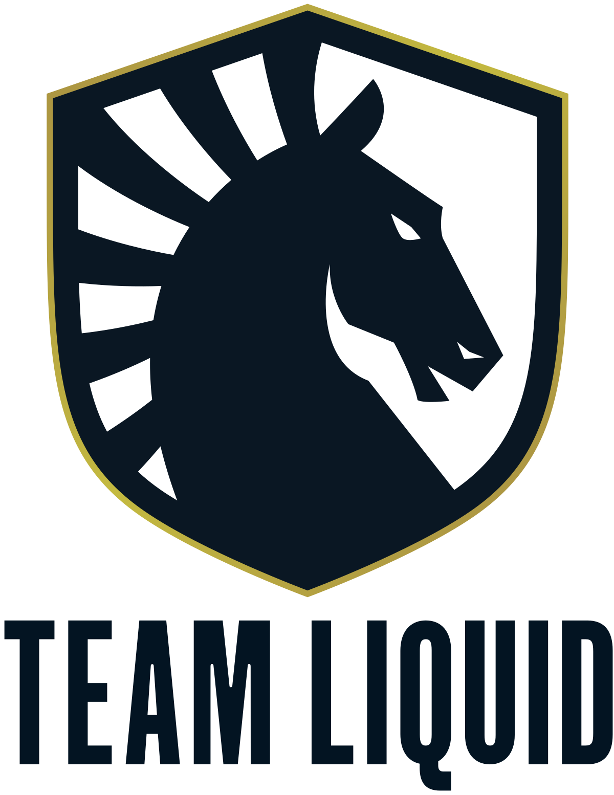
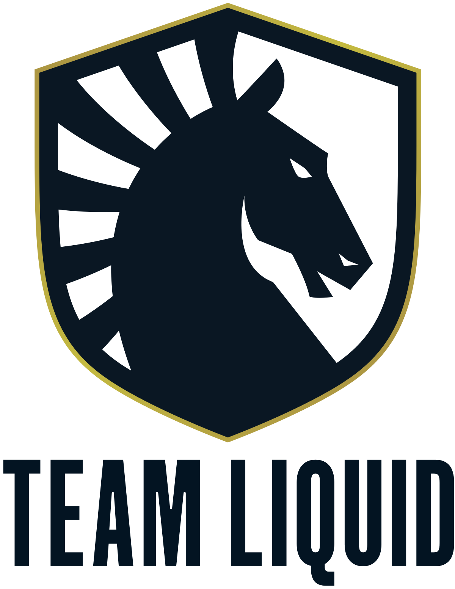

A 2010-es Los Angeles-i World Cyber Games Grand Finals tartott egy League of Legends bajnokságot. Hétezer dolláros nyereményért küzdöttek a csapatok a Föld minden tájáról, a győztes a Counter Logic Gaming észak-amerikai csapat lett.
Az első évad lezárásaként megrendezett bajnokságnak a Dreamhack svéd rendezvény adott otthont, 2011 júniusában. A százezer dollár összdíjazású bajnokságot az európai Fnatic csapat nyerte. A meccsek nézettsége rekordokat döntött, a legmagasabb mért érték több mint kétszázezer néző volt és összesen több mint 1.6 millió nézője volt a bajnokságnak.
Pár nagyobb csapat:
FNATIC-----------------------------------------------------------G2-------------------------------------------------------TEAM LIQUID------------------------------------------------SCHALKE04

 
